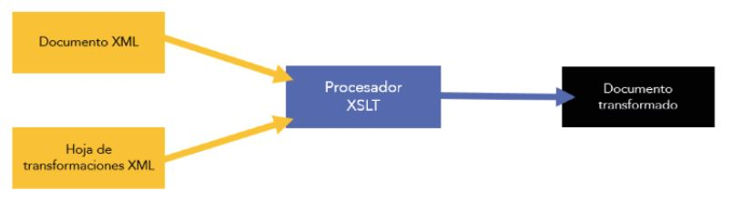
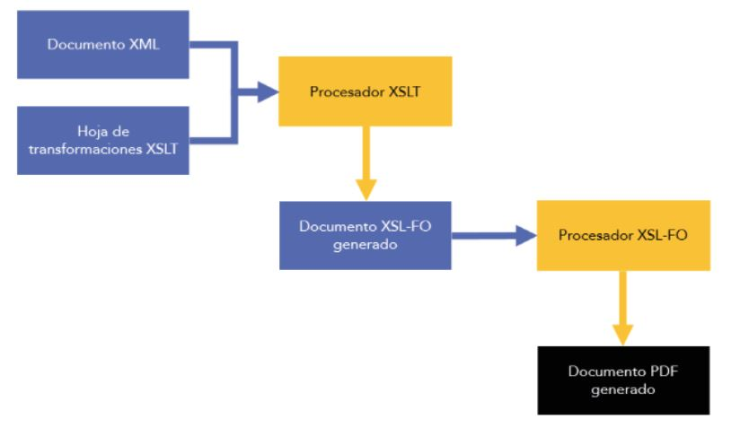

UF1
HTML
Historia
Ojo esto de las fechas pal examen


Estructura
Enlace a explicacion en 3school


Tablas
Enlace a explicacion en 3school

Enlaces
Enlace a explicacion en 3school

_self - Default. Opens the document in the same window/tab as it was clicked
_blank - Opens the document in a new window or tab
_parent - Opens the document in the parent frame
_top - Opens the document in the full body of the window
Ejemplo:

Imagenes
Enlace a explicacion en 3school

mapas
Enlace a explicacion en 3school

Formularios
Marcos
Son para incrustar otros documentos HTML. Ya no se suelen usar, aunque los de yutube lo usan. Hay dos tipos:
- frame No soportado en HTML5 aunque los exploradores lo siguen soportando.
Ver en 3school
- iframe es el que se usa. Permite aplicarle estilos CSS.

Ver en 3school
Agrupaciones
Agrupan elementos para despues poder tratarlos como si fuesen un bloque hay dos tipos:
- < div > Agrupa elementos en bloques grandes.
- < span > Agrupan elementos en una sola linea.

Elementos de valor semántico
Nos permiten agrupar cosas segun la posicion en la pagina web.

CSS
Definicion del estilo en css

Siempre trabajar en archivos separados, es decir de forma externa
Estructura basica

Selectores

Rojo es una clase, es generico para todo lo que se llame rojo. Las clases se pueden ir anidando
Amarillo es un identificador, solo una cosa se llama amarillo son unicos. Se pueden combinar identificadores y clases.
Propiedades
Modelo de cajas
Sistema basico en CSS. Se refiere al espacio que ocupan y la distancia entre elementos de la pagina.

- margin separacion entre un elemento y los elementos que tiene alrededor.

- padding separacion entre el contenido y el borde del elemento.
- border contorno del elemento.

XML
XML deriva de SGML
Caracteristicas
- -Solo un elemento raiz
- - Texto plano
- - Compacidad
- - Independencia del dispositivo final
- - Especializacion
- - Flexibilidad
Clasificacion
- - De presentacion
(WYSiWYG, SGMl, RTF)
- - Descriptivo, estructutal o semantico. Describen lo que se ve no como se ve
Describen lo que se ve, no como se ve
XML
Bases de datos semi estructuradas
- - Procedimental
- - Hibridos<
Herramientas de edicion
BaseX, XMLSPY de Altova, <oXigen/> de SyncroSoft, XML Copy Editor, XmlPad pro Edition de WMHelp
Estructura
Elementos
Solo un elemento raiz del que van colgando los demas
<nombre_elemento atributo1 atributo2>
...........
...........
<nombre_elemento/>
Elemento sin contenidos = <nombre_elemento/>
Atributos
<persona1 DNI="2334543q"> .......... <persona1/>
Comentarios
Espacio Nombres
Instrucciones al procesador
<? aqui se meterian las instrucciones ?>
Entidades predefinidas, Caracteres especiales de marcado
Enlace a explicacion en 3school

Secciones CDATA
Son caracteres que no necesitan ser procesados
Validacion
Validacion con DTD
Asociacion
Se hace en el prologo de documento XML
< ?xmlversion=”1.0” encoding =”ISO-8859-1” standalone =”no”>
< !DOCTYPE> persona SYSTEM “personas.dtd”
La primera linea nos indica la version de XML a utilizar, el tipo de codificacion y si se requiere archivo externo
En la segunda es donde se asocia en DTD con el archivo externo

<!ELEMENT>
<!ELEMENT nombre_elemento modelo_contenido>
<!ELEMENT br EMPTY>
- ANY cualquier cosa. Evita llevar a cabo comprobacion sintactica en el DTD
- EMPTYelemento vacio. Describe un elemento que no tenda descendientes
Ejemplo :
<!ELEMENT Ilerna (modulo+)>
<!ELEMENT modulo (titulo, grado, numero, UFs)>
<!ELEMENT titulo (#PCDATA)>
<!ELEMENT grado (#PCDATA)>
<!ELEMENT numero (#PCDATA)>
<!ELEMENT UFs (UF+)>
<!ELEMENT UF (nombre?, temas?)>
<!ATTLIST UF unidad CDATA #REQUIRED>
<!ELEMENTnombre (#PCDATA)>
<!ELEMENT temas (tema)>
<!ELEMENT tema (#PCDATA)>
<!ATTLIST>
<!ATTLIST nombre_elemento
nombre_atributo tipo_atributo caracter
nombre_atributo tipo_atributo caracter >
- #IMPLIED es opcional
- #REQUIRED es un valor obligatorio
- #FIXED cuando el atributo es de caracter obliugatorio y tiene asgnado un valor por defecto que va a ser unico para el
<!ENTITY>
Datos (#PCDATA)
Caracteres que puede ser textuales, numericos o de cualquier formato que no disponga de ninguna marca
<ELEMENT titulo (#PCDATA)>
Atributos
- CDATA: caracteres qeue no disponen de etiquetas
- ENTITY: asociado al nombre de una entidad
- Enumerado: lista de distintos valores entre los quie se deve encontra el valor uno
- ID:identificador unico
- IDREF:valor correspondiente a un atributi ID de un elemento diferente
- IDREFS:permite represenbtar una gran cantidad de ID correspondientres a otros elementos, que deben estar separados entre ellos por un espacio en blanco
- NMTOKEN: nombre que no tiene espacios en blanco en su interior, si tiene espacios en los extremos se ignoran
- NMTOKENS: igual que el anterior pero hace referencia a una lista de nonmbres que van separados entre ellos por un espacio
- NOTATION: nomnbre de notacion que debe estar definido previamente en un DTD
Elementos descendentes
Cardinalidad entre elementos
- ?puede aparecer 0 o 1 veces
- *puede aparecer 0 a N veces
- +puede aparecer 1 a N veces
Secuencia de elementos
- A,B El elemento B aparecera a continuacion del A
- A|B Aparecera el elemeto A o B pero no ambos
- contenido mixto
Ejemmplo

Validacion con XML Schema
Asociacion
< ?xmlversion=”1.0” encoding=”UTF-8” standalone=”no”>
< persona xmlns:xsi =”http://www.w3.org/2001/XMLSchema-instance”
xsi:noNamespaceSchemaLocation = “personas.xsd”>
xs:element
Atributos principales
- name nombre del elemento
- ref la descripcion del elemento esta en un lugar diferente
- type tipo de elemnto
- default valor que toma por defecto
- fixed unico valor que puede tomar el elemento
- minOccurs minimo numero apariciones
- maxOccurs MAximas apariciones
xs:atribute
Atributos principales
- name asociado al nombre del elmento
- ref se utiliza para definir el elemento en otro sitio
- type tipo elemento
- use indica si es obligatorio, opcional, o prohibida la existencia de un atributo
- default valor que toma cuando es procesado
- fixed unico valor que puede tomar un atributo
Tipo de contenido
< xs:simpleContent >
contenido simple solo contiene elementos que posean contenido textual, sin elementos descendentes
< xs:complexContent >
Pueden poseer contenido textual, pueden tener elementos descendentes
< xs:sequence > los contenidos estan en la misma secuencia
< xs:choice > obliga a elegir solo un elemento
< xs:all > da igual el orden
Ejemplo

UF2
RSS
Estructura
Primero siempre hay que poner la linea de XML y la segunda siempre es la del RSS version etc. Despues se abre la de channel y al final se cierran tanto channel como RSS
Title, link y description son obligarorios tanto en el channel como en el item

Etiqueta channel

Etiqueta item

Software de creacion de canales de contenido
Drupal
JOOMLA!
Validacion de RSS
https://validator.w3.org/feed/
Agregacion
Hay varios tipos, De Escritorio, en linea, como plugins
XSL transformacion de XML
W3C creo tres especificaciones para el XSL:
- XSLT lenguake XML para transformar los XML a otras sistanxis
- XSL-FO lenguaje XML para crear transforamciones visuales, pasar a PDF etc. Esto no caen en el examen
XSLT
Lenguaje XML, espacio de nombres XSL.
Conversion

Estructura

Elemtos
xsl:stylesheet
Elemento raiz de la hoja, especifica la version y el espacio de nombres.

xsl:output
Formato de salida. El omit es para que quite la definicion al princpio del XML

xsl:template
Plantilla con las acciones a aplicar
xsl:value-of
Devuelve el valor de un nodo en concreto

xsl:for-each
Para recorrer los nodos como si fuera un bucle
xsl:sort
ordena los nodos dependiendo del criterio. en este caso de menos a mayor

xsl:if
comprobaciones condicionales

xsl:choose
Permnite elegir entre diferentes opciones

XSL-FO
Es una aplicacion JAVA dentro del codigo Apache que, entre sus tareas principales, se encarga de coger un documento XSL-FO de entrada para poder generar una salida en formato diferente, como un PDF

XPATH
Lenguaje de consulta bastante sencillo, para recorrer el arbol de nodos XML.
Disenado para acceder, transformar y dar formato de salida a documentos XML
Expresiones comunes


Ejemplos
pokedex/pokemon/nombre
/pokedex/pokemon/tipoPokemon/tipo
/pokedex/pokemon[tipoPokemon/tipo="Fuego"]/nombre
/pokedex/pokemon[caracteristicas/peso<15 and caracteristicas/peso/@unidad="kg"]/nombre
/pokedex/pokemon/caracteristicas[altura>1]/peso
/pokedex/pokemon[tipoPokemon/tipo="Normal"]/debilidades
XQuery
Permite estraer consultas y procesar la informacion
diferencia entre dos partes, una parecida a SQL ya que es un lenguaje orientado a bases de datos, otra es como el XPath
Es un lenguaje de expresiones, mismos datos primitivos que XPath, mismos elementos, elemento raiz etc.
Expecificos de XQuery:
- doc() permite leer documento XML. Devuelve el nodo raiz
- FLWOR son un conjunto de funciones:
- for indica con un rango los valores a tratar
- letpermite declarar variables para que podamos asignarles valores. Parecido a un ARRAY
- whereva junto con FOR, para meter condiciones
- order by
- return
- otras
- declare function permite declarar funciones
- if...elsetipico condicional
Funciones predefinidas
Texto
- uppercase
- substgring
- contains
numeros
fecha
- current-date
- current-time
nodos XML
- rootdevuelve el nodo raiz
Ejemplos